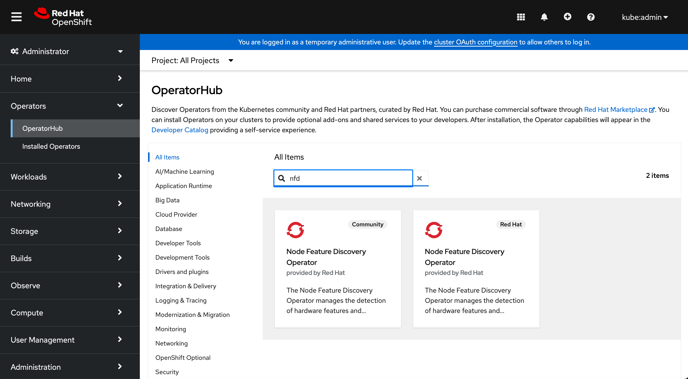

- Deploying AMD GPU Operator on OpenShift Using OLM
- Prerequisites
- Installation
- Configuration
- Uninstallation
Deploying AMD GPU Operator on OpenShift Using OLM
This guide explains how to deploy the AMD GPU Operator on OpenShift using the Operator Lifecycle Manager (OLM).
Prerequisites
Before installing the AMD GPU Operator, ensure your OpenShift cluster meets the following requirements:
Required Operators
The following operators must be enabled in your OpenShift cluster (these are typically enabled by default):
Service CA Operator
- Required for certificate signing and authentication between the kube-apiserver and KMM webhook server
- Verify status:
oc get pods -A | grep service-ca
Operator Lifecycle Manager (OLM)
- Required for managing operator installation and dependencies
- Verify status:
oc get pods -A | grep operator-lifecycle
MachineConfig Operator
- Required for configuring the blacklist for
amdgpudriver - Verify status:
oc get pods -A | grep machine-config
Cluster Image Registry Operator
- Required for driver image building and storage within OpenShift cluster
- Verify status:
oc get pods -A | grep image-registry
Configure Internal Registry
If you plan to build driver images within the cluster, you must enable the OpenShift internal registry:
- Verify current registry status:
oc get pods -n openshift-image-registry
- Configure registry storage (example using emptyDir):
oc patch configs.imageregistry.operator.openshift.io cluster --type merge \
--patch '{"spec":{"storage":{"emptyDir":{}}}}'
- Enable the registry:
oc patch configs.imageregistry.operator.openshift.io cluster --type merge \
--patch '{"spec":{"managementState":"Managed"}}'
- Verify the registry pod is running:
oc get pods -n openshift-image-registry
Installation
1. Install Required Dependencies
-
Install Node Feature Discovery (NFD) Operator
-
Navigate to the OpenShift Web Console
- Go to OperatorHub
- Search for "Node Feature Discovery"
- Select and install the RedHat version of the operator

-
Install Kernel Module Management (KMM) Operator
-
Navigate to the OpenShift Web Console
- Go to OperatorHub
- Search for "Kernel Module Management"
- Select and install the RedHat version (without Hub label)

2. Install AMD GPU Operator
Currently, the AMD GPU Operator is not available in OperatorHub. Install it using the Operator SDK:
- Set up your environment:
- Install the
kubectlbinary - Configure access to your OpenShift cluster
-
Install Operator SDK
-
Deploy the operator bundle:
operator-sdk run bundle docker.io/amd/gpu-operator-bundle:v0.0.1 --namespace=default
Note: The bundle image URL and tag will be updated in future releases.
- Verify the operator deployment:
oc get pods
Configuration
1. Create Node Feature Discovery Rule
Create an NFD rule to detect AMD GPU hardware:
apiVersion: nfd.openshift.io/v1
kind: NodeFeatureDiscovery
metadata:
name: amd-gpu-operator-nfd-instance
namespace: default
spec:
operand:
image: quay.io/openshift/origin-node-feature-discovery:4.16
imagePullPolicy: IfNotPresent
servicePort: 12000
workerConfig:
configData: |
core:
sleepInterval: 60s
sources:
pci:
deviceClassWhitelist:
- "0200"
- "03"
- "12"
deviceLabelFields:
- "vendor"
- "device"
custom:
- name: amd-gpu
labels:
feature.node.kubernetes.io/amd-gpu: "true"
matchAny:
- matchFeatures:
- feature: pci.device
matchExpressions:
vendor: {op: In, value: ["1002"]}
device: {op: In, value: [
"74a0", # MI300A
"74a1", # MI300X
"740f", # MI210
"7408", # MI250X
"740c", # MI250/MI250X
"738c", # MI100
"738e" # MI100
]}
Verify the NFD label is applied:
oc get node -o yaml | grep "amd-gpu"
2. Create blacklist (for installing out-of-tree kernel module)
Create a Machine Config Operator custom resource to add amdgpu kernel module into the modprobe blacklist, here is an example of custom resource MachineConfig, please set master for the label machineconfiguration.openshift.io/role if you run Single Node OpenShift or worker in other scenarios with dedicated controllers.
Node will reboot
After adding amdgpu kernel module to blacklist by using MachineConfig custom resource, the Machine Config Operator will automatically reboot selected nodes.
apiVersion: machineconfiguration.openshift.io/v1
kind: MachineConfig
metadata:
labels:
machineconfiguration.openshift.io/role: worker
name: amdgpu-module-blacklist
spec:
config:
ignition:
version: 3.2.0
storage:
files:
- path: "/etc/modprobe.d/amdgpu-blacklist.conf"
mode: 420
overwrite: true
contents:
source: "data:text/plain;base64,YmxhY2tsaXN0IGFtZGdwdQo="
3. Create DeviceConfig
Create a DeviceConfig CR to trigger the GPU driver installation:
apiVersion: amd.com/v1alpha1
kind: DeviceConfig
metadata:
name: test-cr
namespace: default
spec:
driver:
enable: true
image: image-registry.openshift-image-registry.svc:5000/$MOD_NAMESPACE/amdgpu_kmod
version: el9-6.1.1
selector:
"feature.node.kubernetes.io/amd-gpu": "true"
The operator will:
- Collect worker node system specifications
- Build or retrieve the appropriate driver image
- Deploy the driver using KMM
- Deploy the ROCM device plugin and node labeller
Verify the deployment:
# Check KMM worker status
oc get pods | grep kmm-worker
# Check device plugin and labeller status
oc get pods | grep test-cr
# Verify GPU resource labels
oc get node -o json | grep amd.com
Uninstallation
Please refer to the Uninstallation document for uninstalling related resources.